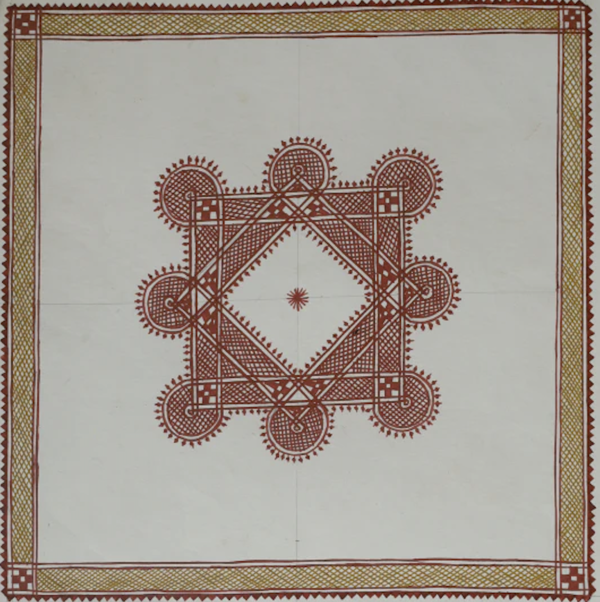

Chittara art feels like simplicity turned into meaning. At first glance, it looks minimal—just red backgrounds with white patterns—but the more you look, the more it speaks. The romance here is pure and grounded. It reflects a life close to nature, where beauty is not about luxury but about balance, rhythm, and harmony. The repeated lines, dots, and shapes create a calming effect, almost like a quiet heartbeat of rural life.
Chittara art is practiced by the Deewaru community in Karnataka. • Traditionally painted on mud house walls • Created during festivals, weddings, and important occasions • Considered a sacred and ritualistic art form The word “Chittara” means “drawing” or “picture”, but it carries deeper meaning—it represents auspiciousness and prosperity.
Chittara art is unique because of its natural and minimal approach: • Natural Materials • Red background → mud mixed with natural pigments • White paint → rice paste • Geometric Patterns Triangles, squares, dots, and lines arranged in structured forms • No Freehand Randomness Every design follows a specific pattern and meaning • Symbolic Motifs • Birds, animals → nature • Patterns → prosperity and protection • Flat Surface Design No depth or shading—purely decorative and symbolic
Chittara art is traditionally practiced by women of the Deewaru community. • Passed down from mother to daughter • Created as part of daily and ritual life • Not originally meant for commercial use Today, efforts are being made to preserve and promote it as a recognized folk art form.